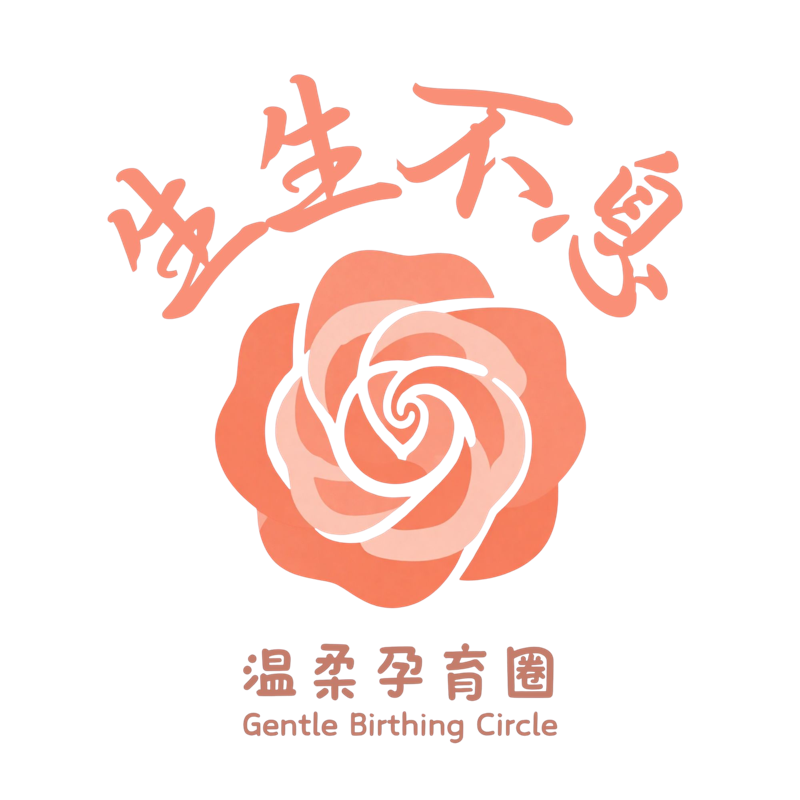
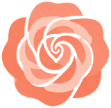
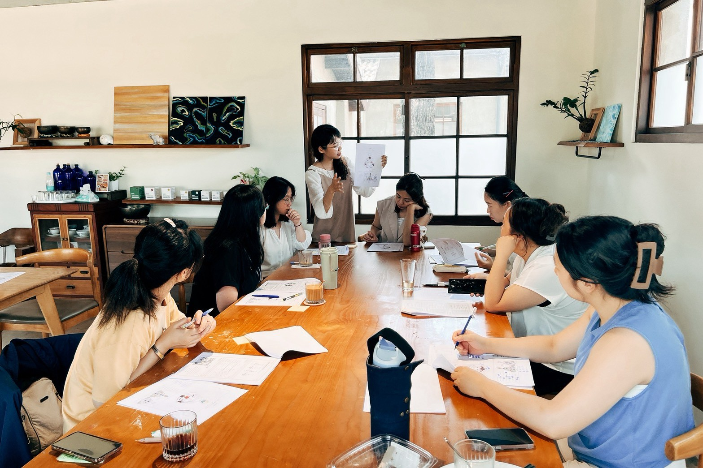
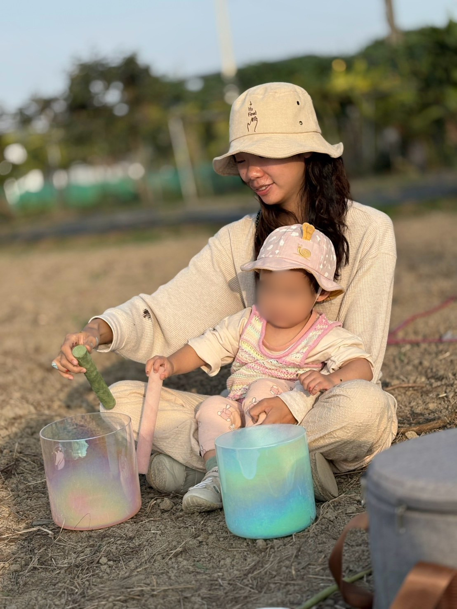
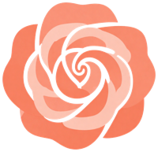
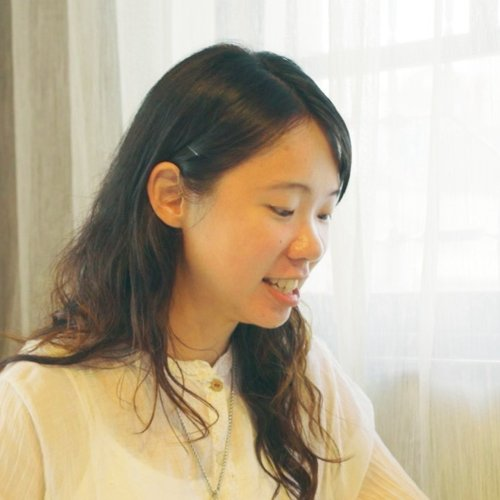
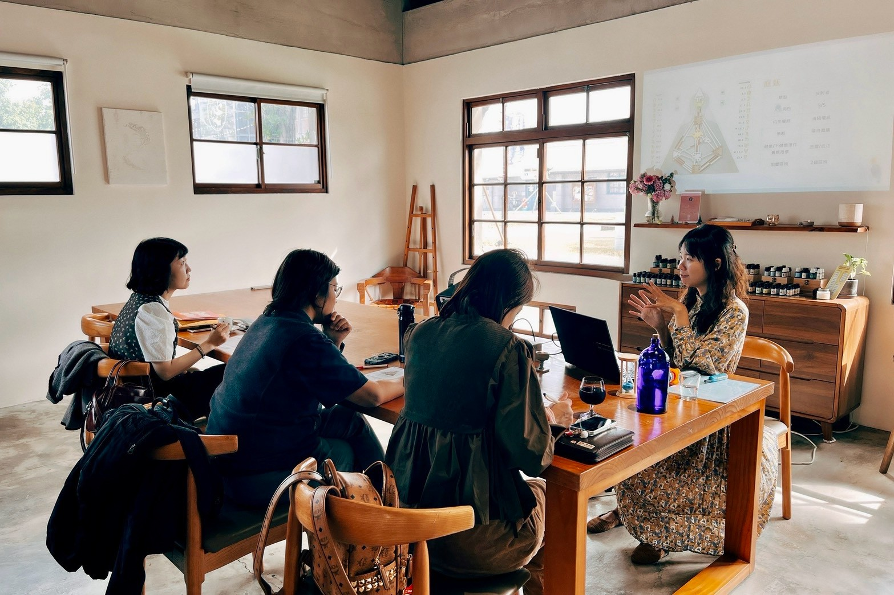

“每個孩子都有獨特的天賦、節奏與生命藍圖。”
透過人類圖，我們能更理解孩子的特質、需求與學習方式，不再用期待與制約看待他們，而是陪伴孩子自在地成長，發揮天賦。
當我們開始理解孩子，也會重新認識自己，在陪伴孩子的過程中，一起成長、一起孕育出更完整的自己。

朵朵如何將人類圖運用於真實生活的親子互動。
透過覺察孩子天生的運作機制，從他們身上反觀並學習，體會不同能量設計帶來的生命禮物與獨特視角。
不再用同一套標準要求孩子，學會看懂彼此的頻率，找到最不費力、最流暢的親子互動與溝通頻率。
明白育兒是一場自我探索的鏡子，在照顧孩子的同時同步安頓自己的內在小孩，找回身為父母的餘裕。
卸下「我必須是完美父母」的社會框架與內疚感，學會溫柔接納自己與孩子的能量特質。

透過人類圖理解彼此的運作機制，尊重孩子的個別性。
在日常生活中實踐人類圖，順應彼此設計、舒適相處。
在育兒這場修行中安頓身心，找回內在的餘裕與力量。
放下「做得不夠好」的壓力，學會溫柔接納自己的能量特質。



